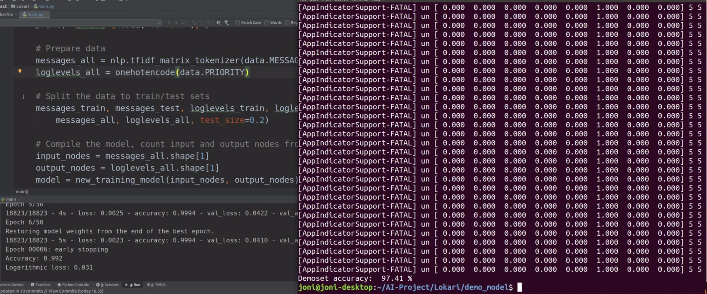
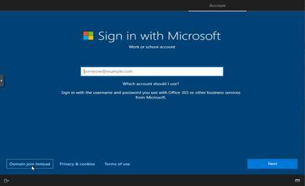
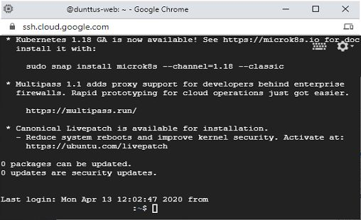
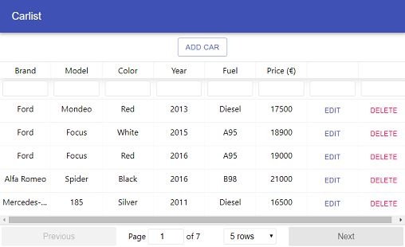
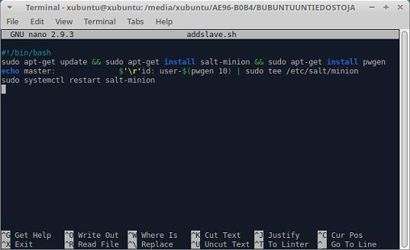
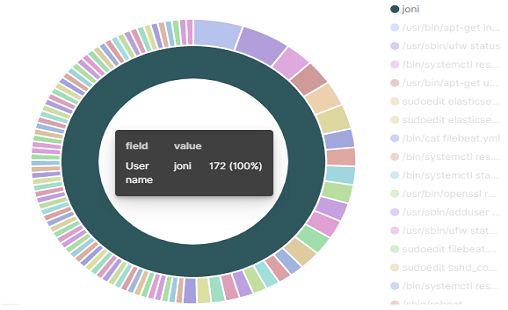
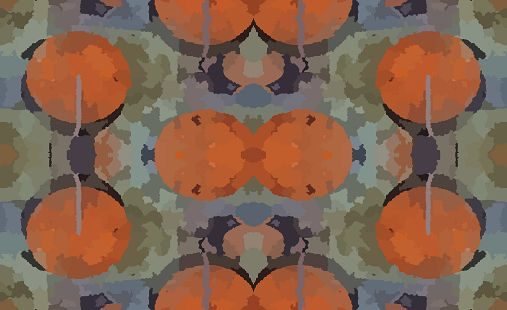
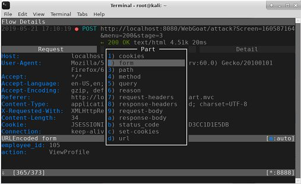
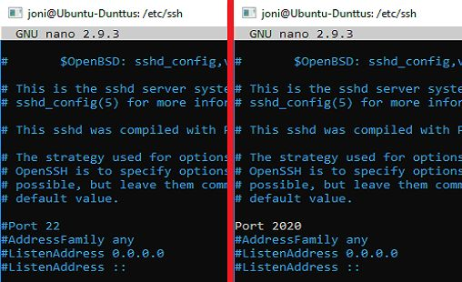

20.5.2020
Lokien vähentäminen
tekoälyn avulla
Projektin tarkoitus vähentää manuaalisesti tarkasteltavia lokitietoja Apache2 ja Nginx web-palvelimille.
Automatisoitu tarkastus prosessi toimii koneoppimisen avulla lisä osana web-palvelimeen. Käytetyt teknologiat mm. Python3, TensorFlow, Keras, Pandas, Docker..

5.9.2021
Windows
asennukset

Opinnäytetyö Microsoft Active Directory palvelimen tietoturvan parantaminen. IT asennukset blogi: Active Directory, Windows 2019, Windows 10, Kali Linux, Zerologin CVE-2020-1472 Exploit, Docker, VSCode.

Infrastructure as a service palvelimen pystytys, Apache2 kotisivun asennus, Domain nimen reititys ja Google App Engine React sivun käyttöönotto.
20.5.2020
Front-end ohjelmointi
React

React front-end koodaus sivuja käytetyt teknologiat mm. React, YARN, npm, Node.js, JavaScript, React-table, React router, Material-UI.
28.4.2019
Keskitetty hallinta
SaltStack

Keskitetysti hallittaan monta eri konetta, automatisoidaan ohjelmien asennukset ja päivitykset SALT tilojen kautta. Minion käyttöjärjestelmiä mm. Debian, Xubuntu, Windows 2016, Windows 10, MX Linux.
18.11.2019
ELK-Stack
lokien keräys

Projektin tarkoitus kerätä keskitetysti lokitietoja ja tehdä tietojen perusteella varoituksia.
24.6.2021
Omat
kuvio taustat

Oma tekemien kuvio tausta kuvien jakamis sivu. Käytetyt teknologiat mm. Virtualhosting, GIMP ja Paint.
25.5.2019
Tunkeutumistestaus
alkeet

Opiskella tunkeutumistestauksen alkeet. Käytetyt teknologiat mm. Nmap, Vagrant, THCHydra, HashCat, SearchSploit, Gobuster, MitmProxy, FoxyProxy, EyeWitness, MetaSploit, HackTheBox.

Opiskella Linuxin alkeet. Käytetyt teknologiat mm. Apache2, Mariabd, DigitalOcean, SSH, UFW, Sysstat, Python3, java, Bash, Debian, Xubuntu.